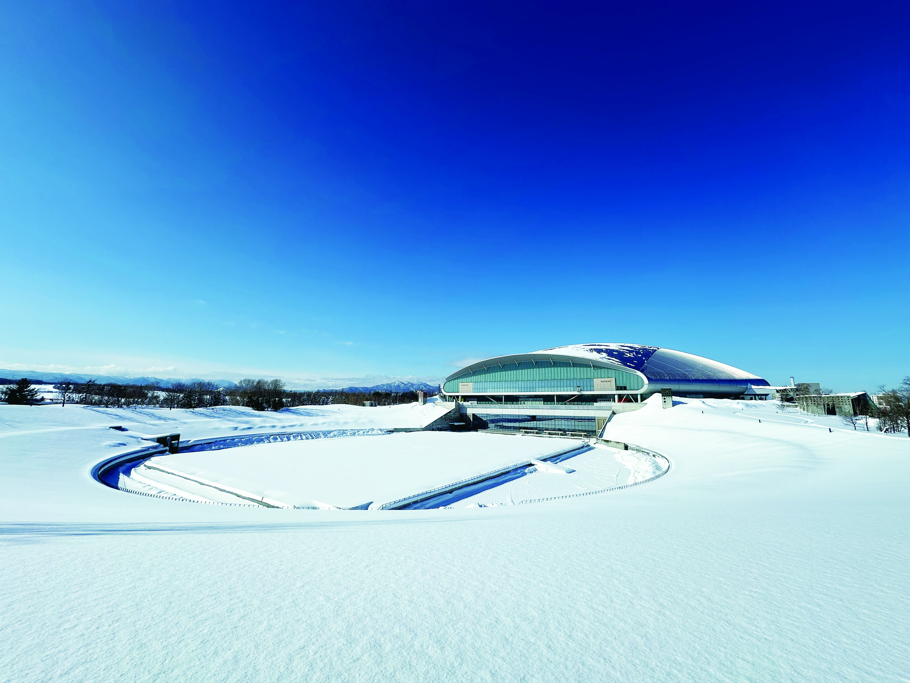
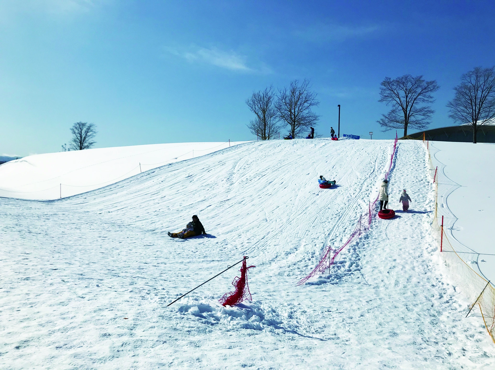
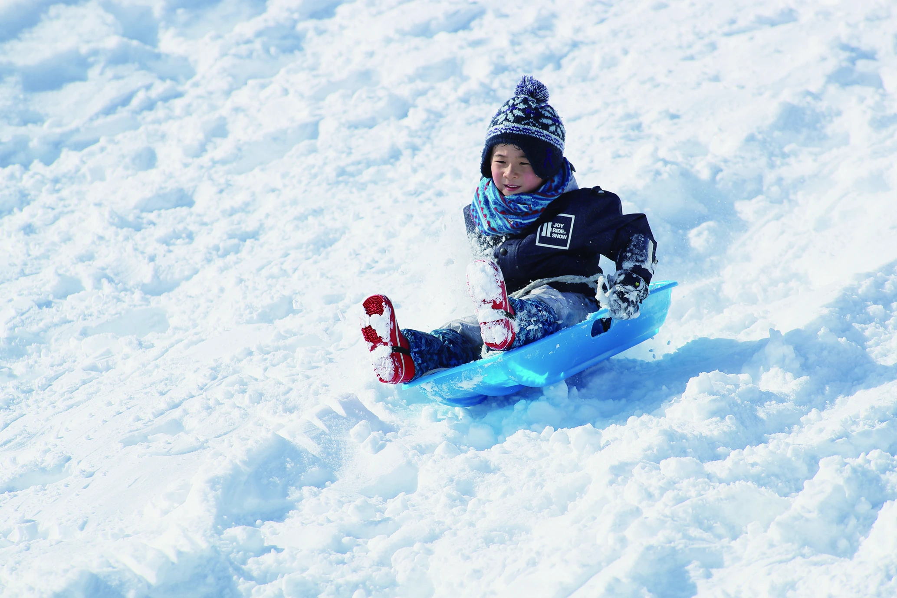

RECOMMENDED
RECOMMENDEDGUIDED TOUR
スノーモービルツアー（30分）
スタッフ先導のもと、ドーム周辺の雪原を走るツアーです。運転免許は不要です。
- 1人乗り（18歳以上）：11,000円
- 2人乗り（運転者20歳以上、同乗者は年齢制限なし）：16,500円

WINTER EVENT AT PREMIST DOME
白銀の世界を遊び尽くす、冬の体験。
開催期間 2026年12月19日（土）〜2027年2月28日（日）
営業時間 10:00〜16:00
※積雪状況により期間・営業日が変更になる場合があります。
会場 大和ハウス プレミストドーム
札幌市豊平区羊ケ丘1番地
地下鉄東豊線「福住」駅から徒歩圏内
SNOW ACTIVITY
インストラクターと楽しむツアーから、気軽な雪遊びまで。
RECOMMENDEDGUIDED TOUR
スタッフ先導のもと、ドーム周辺の雪原を走るツアーです。運転免許は不要です。

RIDE
インストラクター指導のもと、雪原を走る四輪バギー。
1人乗り（16歳以上）：3,000円
2人乗り（運転者20歳以上・同乗者16歳以下）：4,500円

RIDE
スノーモービルに引かれたラフティングボートやバナナボートに乗る、子どもから大人まで楽しめるアクティビティ。
大人（中学生以上）：1,500円
子ども（小学生以下）：1,000円
SNOW PARK
スケールアップしたスノースライダーや、お子さま向けの遊びも。

今季リニューアル。スケールアップした斜面でチューブ滑りや、そり滑りをお楽しみいただけます。
ゴムチューブ・プラスチックそりは無料貸出（数量限定）。安全に遊べるものは持ち込みも可能です。
スノーストライダーは対象年齢2〜7歳（目安）。有料貸出20分500円、持ち込みも可能です。

PLAY
雪だるまづくりやバブルボール／サイバーホイールなど、さまざまな雪あそびを楽しめるエリアです。
※別途有料コンテンツがあります。料金・利用条件は主催者へご確認ください。

FOR KIDS
対象年齢は2〜7歳（目安）。専用アタッチメントを付けたランニングバイクで遊べます。持ち込みも可能です。
有料貸出：20分 500円

PLAY
ゴムチューブやプラスチックそりを使って雪の斜面を滑ります。無料貸出は数量限定です。
貸出料：無料（数量限定）
BOOKING
ご希望の商品をお選びください。
IMAGE VIDEO
動画を再生できない場合は、アクティビティのご案内をご覧ください。
INFORMATION
利用料2,200円。展望台入場割引券付きです。北海道にお住まいの中学生以上の方は1,000円割引。小学生以下・未就学児は無料です。居住地・年齢確認書類をご持参ください。
2026年12月19日（土）〜2027年2月28日（日）、10:00〜16:00。積雪状況等により開催期間や営業日が変更になる場合があります。ドームイベント等により営業しない日があります。
スノーウェア上下：2時間3,000円。貸出数に限りがあります。手袋・靴・帽子の貸し出しはありません。
イベントのない日：普通車は最初の1時間220円（以降30分ごと110円）、全長5.6m以上の大型車は最初の1時間440円（以降30分ごと220円）。500円以上の利用で駐車料金が3時間まで無料です。イベント開催日は料金が変わります。
天候・積雪状況によりツアーが中止になる場合があります。写真はイメージです。表示価格は消費税込みです。別途有料コンテンツがあります。
株式会社札幌ドーム
大和ハウス プレミストドーム
札幌市豊平区羊ケ丘1番地
地下鉄東豊線「福住」駅から徒歩圏内
開催日・営業情報は積雪状況等により変更になる場合があります。主催者の最新案内をご確認ください。
お問い合わせはメールでご連絡ください。